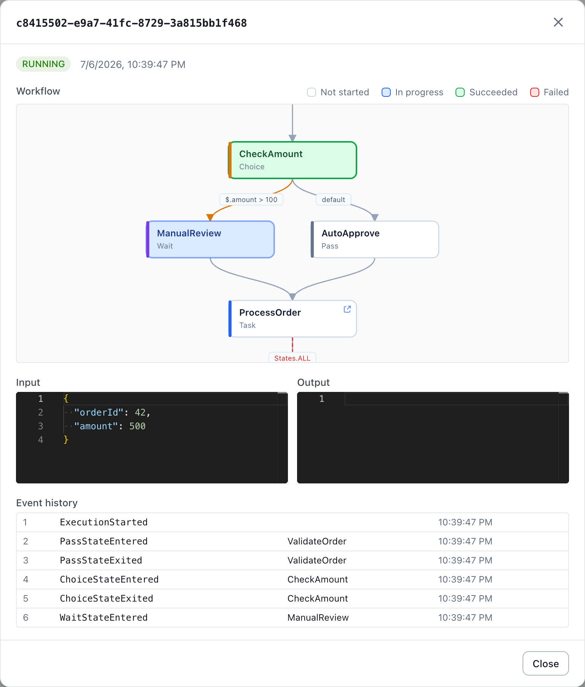
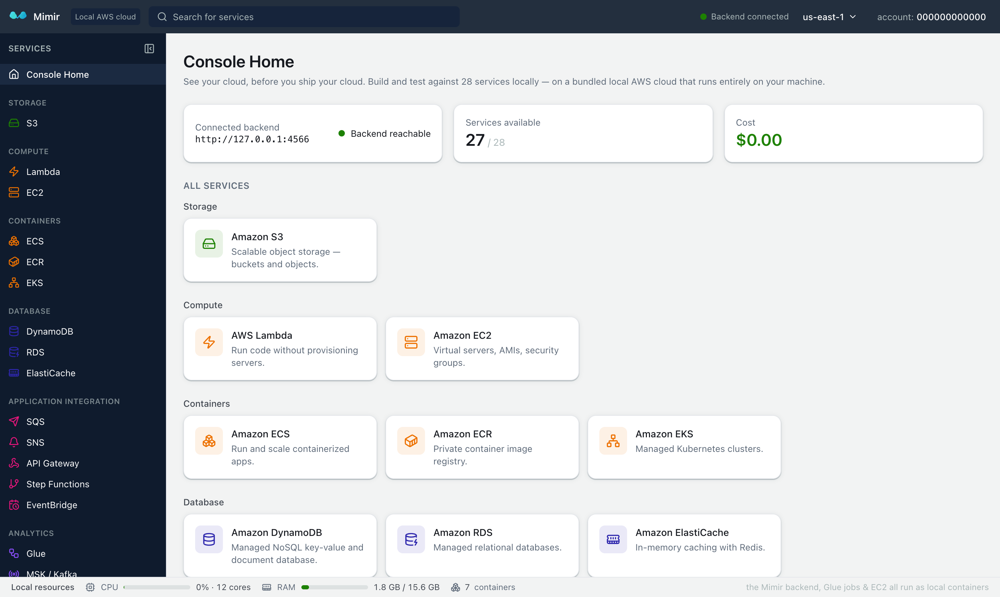
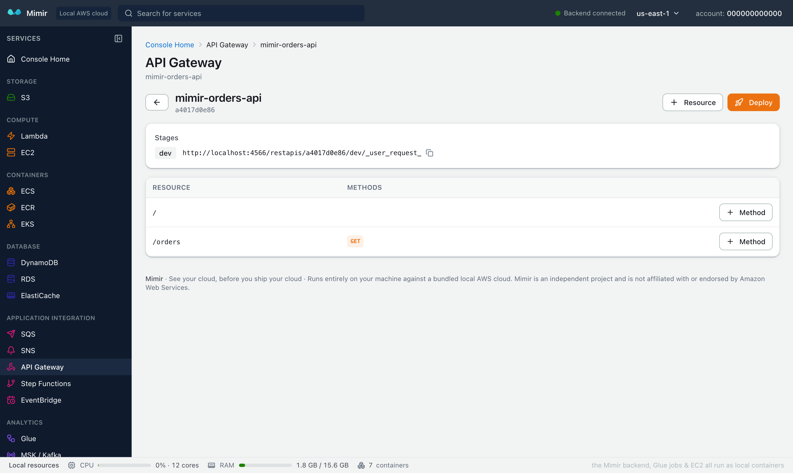
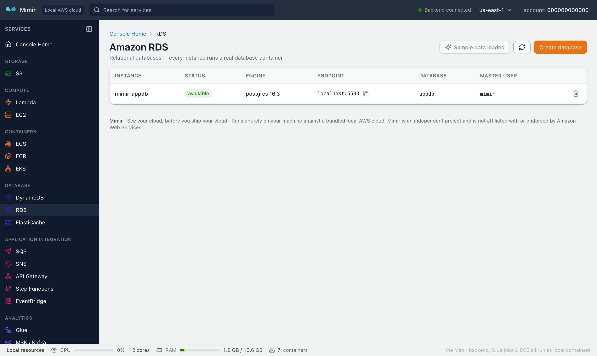

See your cloud, before you ship your cloud.
A local AWS cloud emulator: 54 AWS-compatible services — S3, Lambda, DynamoDB, RDS, Step Functions, API Gateway, Glue and more — on localhost:4566, with a 27-service web console on localhost:8080, real container-backed engines, and zero AWS account. Free.
curl -fsSL https://tanuj24.github.io/mimir/install.sh | shThen run mimir start and open http://localhost:8080 — click “Load sample data” on any console page to explore a populated cloud.
or run it with Docker — see all install options. Needs a container runtime (Docker Desktop, Docker Engine or colima); first download ~1 GB.
A real-time workflow graph: states color in real time as the execution progresses, Choice branches show their conditions, and Task nodes deep-link to the local resources they invoke.

The bundled web console covers 27 services — every page has a one-click “Load sample data” button, so you can explore a populated cloud immediately.

Zero code changes: point your AWS CLI, SDK or app at http://localhost:4566 with access key mimir, secret mimir, region us-east-1 — everything runs locally on your machine.
Create a REST or HTTP API, attach a Lambda integration, and curl it on localhost — no deploy pipeline, no waiting.

Launching an RDS instance starts a real PostgreSQL, MySQL or MariaDB container on a dedicated local port — connect with psql or any client, exactly like the real thing.

| Mimir | LocalStack (free) | |
|---|---|---|
| Web console | 27 services, bundled | Resource browser |
| RDS / ElastiCache | Real Postgres/Redis, free | Paid tier |
| ECS / EKS | Real containers / k3s, free | Paid tier |
| Glue job execution | Real local Spark, free | Paid tier |
| Cognito / Athena | Included, free | Paid tier |
| Step Functions UI | Live workflow graph | — |
| Price | Everything free | Free core + paid tiers |
Install Mimir and point your AWS CLI or SDK at http://localhost:4566 with access key mimir, secret mimir, region us-east-1. No account and no sign-up. Core services work offline once pulled; container-backed engines (Glue, RDS, EKS) download their engine images on first use.
Yes — Mimir is free, including services LocalStack gates behind paid tiers: RDS, ECS, EKS, Cognito, Athena and Glue job execution, plus a full 27-service web console.
Yes. Functions run in real runtime containers with logs, versions, aliases, function URLs and event source mappings.
Yes. State persists automatically in a mimir-data Docker volume — no flags needed. It survives stops, container removal and image updates, and mimir update is lossless.
Yes — the image is multi-arch (arm64 + amd64), Apple Silicon native.
A container runtime — Docker Desktop, Docker Engine or colima. The first download is about 1 GB. See all install options.